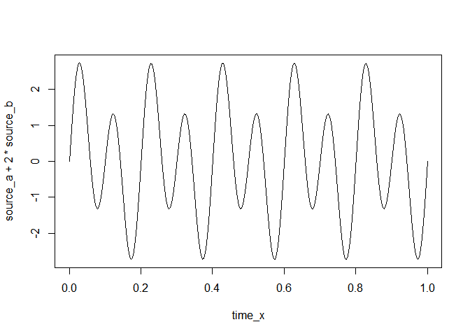

The infomax package is an R implementation of the Infomax and Extended Infomax algorithms (Bell & Sejnowski, 1995; Makeig, Bell, Jung, & Sejnowski, 1996) for Independent Component Analysis.
Installation
The package is not currently released on CRAN.
You can install the development version from GitHub with:
# install.packages("devtools")
devtools::install_github("craddm/infomax")Example
This is a basic example which shows you how to solve a common problem:
time_x <- seq(0, 1, by = 1/256)
source_a <- sin(2 * pi * 5 * time_x)
source_b <- sin(2 * pi * 10 * time_x)
plot(time_x, source_a, type = "l")
plot(time_x, source_b, type = "l")
plot(time_x, source_a + 2 * source_b, type = "l")
plot(time_x, source_a * 3.4 + 1.5 * source_b, type = "l") The function returns the estimated mixing matrix, unmixing matrix, and unmixed source timecourses.
The function returns the estimated mixing matrix, unmixing matrix, and unmixed source timecourses.
mixed_data <- matrix(NA,
nrow = length(time_x),
ncol = 2)
mixed_data[, 1] <- source_a + 2 * source_b
mixed_data[, 2] <- source_a * 3.4 + 1.5 * source_b
dat_out <- run_infomax(mixed_data, whiten = "PCA")
#> Step: 1, lrate: 0.007213, wchange: 0.36359434, angledelta: 0.0
#> Step: 2, lrate: 0.007213, wchange: 0.19365123, angledelta: 0.0
#> Step: 3, lrate: 0.007213, wchange: 0.09511422, angledelta: 110.2
#> Step: 4, lrate: 0.007069, wchange: 0.03416686, angledelta: 81.3
#> Step: 5, lrate: 0.006928, wchange: 0.02498514, angledelta: 97.6
#> Step: 6, lrate: 0.006789, wchange: 0.01697742, angledelta: 118.7
#> Step: 7, lrate: 0.006653, wchange: 0.02123889, angledelta: 129.7
#> Step: 8, lrate: 0.006520, wchange: 0.00283895, angledelta: 150.8
#> Step: 9, lrate: 0.006390, wchange: 0.01162775, angledelta: 59.2
#> Step: 10, lrate: 0.006390, wchange: 0.02386467, angledelta: 134.1
#> Step: 11, lrate: 0.006262, wchange: 0.00867708, angledelta: 157.8
#> Step: 12, lrate: 0.006137, wchange: 0.00576713, angledelta: 149.2
#> Step: 13, lrate: 0.006014, wchange: 0.00288187, angledelta: 96.3
#> Step: 14, lrate: 0.005894, wchange: 0.02666575, angledelta: 81.9
#> Step: 15, lrate: 0.005776, wchange: 0.05167159, angledelta: 170.8
#> Step: 16, lrate: 0.005661, wchange: 0.01612299, angledelta: 173.5
#> Step: 17, lrate: 0.005547, wchange: 0.00023851, angledelta: 140.0
#> Step: 18, lrate: 0.005436, wchange: 0.01612445, angledelta: 60.8
#> Step: 19, lrate: 0.005328, wchange: 0.01383950, angledelta: 172.2
#> Step: 20, lrate: 0.005221, wchange: 0.00415206, angledelta: 95.2
#> Step: 21, lrate: 0.005117, wchange: 0.02188085, angledelta: 116.1
#> Step: 22, lrate: 0.005014, wchange: 0.01145037, angledelta: 164.6
#> Step: 23, lrate: 0.004914, wchange: 0.00203022, angledelta: 133.1
#> Step: 24, lrate: 0.004816, wchange: 0.00598177, angledelta: 131.8
#> Step: 25, lrate: 0.004719, wchange: 0.01116702, angledelta: 80.1
#> Step: 26, lrate: 0.004625, wchange: 0.02218398, angledelta: 149.3
#> Step: 27, lrate: 0.004533, wchange: 0.00826678, angledelta: 114.2
#> Step: 28, lrate: 0.004442, wchange: 0.01499818, angledelta: 65.4
#> Step: 29, lrate: 0.004353, wchange: 0.02627220, angledelta: 147.0
#> Step: 30, lrate: 0.004266, wchange: 0.00692281, angledelta: 121.1
#> Step: 31, lrate: 0.004181, wchange: 0.01051815, angledelta: 162.7
#> Step: 32, lrate: 0.004097, wchange: 0.01415792, angledelta: 133.8
#> Step: 33, lrate: 0.004015, wchange: 0.00013781, angledelta: 55.6
#> Step: 34, lrate: 0.004015, wchange: 0.00465572, angledelta: 157.8
#> Step: 35, lrate: 0.003935, wchange: 0.00066548, angledelta: 114.1
#> Step: 36, lrate: 0.003856, wchange: 0.00385911, angledelta: 91.3
#> Step: 37, lrate: 0.003779, wchange: 0.00126489, angledelta: 69.7
#> Step: 38, lrate: 0.003703, wchange: 0.00098297, angledelta: 109.5
#> Step: 39, lrate: 0.003629, wchange: 0.01516207, angledelta: 16.2
#> Step: 40, lrate: 0.003629, wchange: 0.00373782, angledelta: 163.5
#> Step: 41, lrate: 0.003557, wchange: 0.00006775, angledelta: 91.8
#> Step: 42, lrate: 0.003486, wchange: 0.00582550, angledelta: 49.5
#> Step: 43, lrate: 0.003486, wchange: 0.00408373, angledelta: 155.8
#> Step: 44, lrate: 0.003416, wchange: 0.00143449, angledelta: 85.6
#> Step: 45, lrate: 0.003348, wchange: 0.00083856, angledelta: 131.9
#> Step: 46, lrate: 0.003281, wchange: 0.00152889, angledelta: 134.1
#> Step: 47, lrate: 0.003215, wchange: 0.00064906, angledelta: 86.8
#> Step: 48, lrate: 0.003151, wchange: 0.00172328, angledelta: 123.0
#> Step: 49, lrate: 0.003088, wchange: 0.00165109, angledelta: 154.7
#> Step: 50, lrate: 0.003026, wchange: 0.00040707, angledelta: 66.5
#> Step: 51, lrate: 0.002965, wchange: 0.00087587, angledelta: 125.0
#> Step: 52, lrate: 0.002906, wchange: 0.00314501, angledelta: 139.9
#> Step: 53, lrate: 0.002848, wchange: 0.00173096, angledelta: 138.3
#> Step: 54, lrate: 0.002791, wchange: 0.00093409, angledelta: 139.5
#> Step: 55, lrate: 0.002735, wchange: 0.00094035, angledelta: 26.5
#> Step: 56, lrate: 0.002735, wchange: 0.00452184, angledelta: 143.5
#> Step: 57, lrate: 0.002681, wchange: 0.00780788, angledelta: 120.3
#> Step: 58, lrate: 0.002627, wchange: 0.00576097, angledelta: 152.1
#> Step: 59, lrate: 0.002574, wchange: 0.00261456, angledelta: 157.3
#> Step: 60, lrate: 0.002523, wchange: 0.00101834, angledelta: 82.7
#> Step: 61, lrate: 0.002472, wchange: 0.00125398, angledelta: 116.0
#> Step: 62, lrate: 0.002423, wchange: 0.00330646, angledelta: 73.4
#> Step: 63, lrate: 0.002375, wchange: 0.00321926, angledelta: 87.4
#> Step: 64, lrate: 0.002327, wchange: 0.00201051, angledelta: 117.2
#> Step: 65, lrate: 0.002281, wchange: 0.00105235, angledelta: 119.8
#> Step: 66, lrate: 0.002235, wchange: 0.00038552, angledelta: 118.1
#> Step: 67, lrate: 0.002190, wchange: 0.00044818, angledelta: 27.2
#> Step: 68, lrate: 0.002190, wchange: 0.00043143, angledelta: 153.1
#> Step: 69, lrate: 0.002146, wchange: 0.00004497, angledelta: 65.9
#> Step: 70, lrate: 0.002103, wchange: 0.00098919, angledelta: 96.7
#> Step: 71, lrate: 0.002061, wchange: 0.00038301, angledelta: 106.6
#> Step: 72, lrate: 0.002020, wchange: 0.00116184, angledelta: 118.2
#> Step: 73, lrate: 0.001980, wchange: 0.00005648, angledelta: 66.1
#> Step: 74, lrate: 0.001940, wchange: 0.00029757, angledelta: 105.9
#> Step: 75, lrate: 0.001901, wchange: 0.00043609, angledelta: 81.4
#> Step: 76, lrate: 0.001863, wchange: 0.00035810, angledelta: 74.0
#> Step: 77, lrate: 0.001826, wchange: 0.00003811, angledelta: 112.2
#> Step: 78, lrate: 0.001790, wchange: 0.00072066, angledelta: 37.3
#> Step: 79, lrate: 0.001790, wchange: 0.00022495, angledelta: 72.1
#> Step: 80, lrate: 0.001754, wchange: 0.00027745, angledelta: 124.5
#> Step: 81, lrate: 0.001719, wchange: 0.00043296, angledelta: 108.1
#> Step: 82, lrate: 0.001684, wchange: 0.00045883, angledelta: 116.6
#> Step: 83, lrate: 0.001651, wchange: 0.00000581, angledelta: 126.6
#> Step: 84, lrate: 0.001618, wchange: 0.00020872, angledelta: 71.3
#> Step: 85, lrate: 0.001585, wchange: 0.00032658, angledelta: 102.8
#> Step: 86, lrate: 0.001554, wchange: 0.00033670, angledelta: 155.4
#> Step: 87, lrate: 0.001522, wchange: 0.00005696, angledelta: 73.9
#> Step: 88, lrate: 0.001492, wchange: 0.00019419, angledelta: 65.6
#> Step: 89, lrate: 0.001462, wchange: 0.00025877, angledelta: 106.1
#> Step: 90, lrate: 0.001433, wchange: 0.00015432, angledelta: 80.0
#> Step: 91, lrate: 0.001404, wchange: 0.00005524, angledelta: 136.0
#> Step: 92, lrate: 0.001376, wchange: 0.00018209, angledelta: 20.2
#> Step: 93, lrate: 0.001376, wchange: 0.00015176, angledelta: 99.8
#> Step: 94, lrate: 0.001349, wchange: 0.00003896, angledelta: 100.1
#> Step: 95, lrate: 0.001322, wchange: 0.00025793, angledelta: 171.3
#> Step: 96, lrate: 0.001295, wchange: 0.00001608, angledelta: 160.3
#> Step: 97, lrate: 0.001269, wchange: 0.00020102, angledelta: 39.2
#> Step: 98, lrate: 0.001269, wchange: 0.00008066, angledelta: 120.6
#> Step: 99, lrate: 0.001244, wchange: 0.00020029, angledelta: 110.9
#> Step: 100, lrate: 0.001219, wchange: 0.00016114, angledelta: 119.6
#> Step: 101, lrate: 0.001195, wchange: 0.00004139, angledelta: 97.3
#> Step: 102, lrate: 0.001171, wchange: 0.00006153, angledelta: 134.2
#> Step: 103, lrate: 0.001147, wchange: 0.00007536, angledelta: 50.4
#> Step: 104, lrate: 0.001147, wchange: 0.00002267, angledelta: 81.5
#> Step: 105, lrate: 0.001124, wchange: 0.00014107, angledelta: 131.2
#> Step: 106, lrate: 0.001102, wchange: 0.00032466, angledelta: 119.0
#> Step: 107, lrate: 0.001080, wchange: 0.00001987, angledelta: 158.6
#> Step: 108, lrate: 0.001058, wchange: 0.00004797, angledelta: 32.3
#> Step: 109, lrate: 0.001058, wchange: 0.00004800, angledelta: 138.8
#> Step: 110, lrate: 0.001037, wchange: 0.00010454, angledelta: 71.3
#> Step: 111, lrate: 0.001016, wchange: 0.00009572, angledelta: 100.9
#> Step: 112, lrate: 0.000996, wchange: 0.00007422, angledelta: 109.0
#> Step: 113, lrate: 0.000976, wchange: 0.00014677, angledelta: 118.2
#> Step: 114, lrate: 0.000957, wchange: 0.00020300, angledelta: 138.7
#> Step: 115, lrate: 0.000938, wchange: 0.00004355, angledelta: 79.5
#> Step: 116, lrate: 0.000919, wchange: 0.00000647, angledelta: 107.4
#> Step: 117, lrate: 0.000900, wchange: 0.00011157, angledelta: 126.8
#> Step: 118, lrate: 0.000882, wchange: 0.00004097, angledelta: 149.3
#> Step: 119, lrate: 0.000865, wchange: 0.00002295, angledelta: 95.2
#> Step: 120, lrate: 0.000847, wchange: 0.00000989, angledelta: 130.9
#> Step: 121, lrate: 0.000830, wchange: 0.00019410, angledelta: 46.7
#> Step: 122, lrate: 0.000830, wchange: 0.00009780, angledelta: 100.4
#> Step: 123, lrate: 0.000814, wchange: 0.00001492, angledelta: 163.1
#> Step: 124, lrate: 0.000798, wchange: 0.00002371, angledelta: 77.8
#> Step: 125, lrate: 0.000782, wchange: 0.00001153, angledelta: 63.0
#> Step: 126, lrate: 0.000766, wchange: 0.00003381, angledelta: 115.7
#> Step: 127, lrate: 0.000751, wchange: 0.00006892, angledelta: 161.5
#> Step: 128, lrate: 0.000736, wchange: 0.00004359, angledelta: 133.5
#> Step: 129, lrate: 0.000721, wchange: 0.00003540, angledelta: 35.5
#> Step: 130, lrate: 0.000721, wchange: 0.00005387, angledelta: 59.9
#> Step: 131, lrate: 0.000721, wchange: 0.00000907, angledelta: 128.8
#> Step: 132, lrate: 0.000707, wchange: 0.00004767, angledelta: 27.7
#> Step: 133, lrate: 0.000707, wchange: 0.00006769, angledelta: 79.8
#> Step: 134, lrate: 0.000692, wchange: 0.00003918, angledelta: 141.7
#> Step: 135, lrate: 0.000679, wchange: 0.00000582, angledelta: 135.5
#> Step: 136, lrate: 0.000665, wchange: 0.00005877, angledelta: 33.6
#> Step: 137, lrate: 0.000665, wchange: 0.00003623, angledelta: 160.8
#> Step: 138, lrate: 0.000652, wchange: 0.00003307, angledelta: 153.8
#> Step: 139, lrate: 0.000639, wchange: 0.00004758, angledelta: 145.3
#> Step: 140, lrate: 0.000626, wchange: 0.00001668, angledelta: 123.7
#> Step: 141, lrate: 0.000613, wchange: 0.00000751, angledelta: 47.4
#> Step: 142, lrate: 0.000613, wchange: 0.00000322, angledelta: 41.5
#> Step: 143, lrate: 0.000613, wchange: 0.00003160, angledelta: 125.6
#> Step: 144, lrate: 0.000601, wchange: 0.00003584, angledelta: 81.8
#> Step: 145, lrate: 0.000589, wchange: 0.00002638, angledelta: 25.5
#> ICA running time: 0.08 s
plot(time_x,
dat_out$S[,1],
type = "l")
plot(time_x,
dat_out$S[,2],
type = "l")
References
- Bell, A.J., & Sejnowski, T.J. (1995). An information-maximization approach to blind separation and blind deconvolution. Neural Computation, 7, 1129-159
- Makeig, S., Bell, A.J., Jung, T-P and Sejnowski, T.J., “Independent component analysis of electroencephalographic data,” In: D. Touretzky, M. Mozer and M. Hasselmo (Eds). Advances in Neural Information Processing Systems 8:145-151, MIT Press, Cambridge, MA (1996).